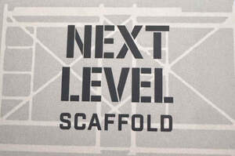

Trade Mark Journal No.2025/043 24 October 2025
UK00004243538 3 August 2025 (6,19,35,37)

- Class 6
- Scaffolding of metal for building; Scaffolding of metal; Metal scaffolding; Scaffolding (Metal -); Ladders and scaffolding, of metal; Framework scaffolding of metal; Tower scaffolding of metal; Metal scaffolding for facades; Metal staircases for use with scaffolding; Metal scaffolding for buildings; Scaffolding towers of metal; Metal ramps for use with scaffolding; Platform staging of metal for use with scaffolding; Beams of metal for use with scaffolding; Work platforms [scaffolding] of metal; Safety scaffolding of metal; Scaffolding apparatus (Metal -); Scaffolding of metal for construction purposes; Platform steps of metal for use with scaffolding; Prefabricated aluminium scaffolding frames; Metal scaffolding boards; Access platforms [scaffolding] of metal; Beams of common metal for scaffolding; Mobile platforms [scaffolding] of metal; Work platforms [scaffold towers] of metal; Scaffold towers of metal; Mobile aerial work platforms [scaffolding] of metal; Prefabricated scaffolds of metal; Canopies [building structures] of metal; Structural steelwork; Materials of metal for scaffolds; Building components of metal for the construction of arches; Building structures of metal; Metal fasteners for scaffolds; Cladding of metal for construction and building; Framework of metal for building; Building (Framework of metal for -); Structural frames of metal for building; Building frameworks of metal; Building (Frameworks of metal for -); Metal materials for building and construction; Structural platforms [structures] of metal; Awnings of metal [building materials]; Steel reinforcement for use in the construction of concrete floors; Structural frameworks of metal for buildings; Conservatories of metal being fixed building structures; Building (Reinforcing materials of metal for -); Portable building structures of metal; Reinforcing materials of metal for building; Reinforcement materials (Metal -) for building; Metal stepladders and ladders; Soffits [metal building materials]; Metal reinforcement materials for building; Steel building materials; Prefabricated building components [metal]; Building bricks (Metal -); Facade construction components of metal; Building and construction materials and elements of metal; Metal brackets for use in the construction and assembly of decking.
- Class 19
- Scaffolding of wood; Scaffolding, non-metallic; Non-metallic staircases for use with scaffolding; Non-metallic ramps for use with scaffolding; Platform staging (Non-metallic -) for use with scaffolding; Scaffolding, not of metal; Platform steps (Non-metallic -) for use with scaffolding; Non-metallic scaffolding boards; Work platforms [scaffolding], not of metal; Safety scaffolding, not of metal; Working platforms [scaffolding], not of metal; Work platforms [scaffold towers], not of metal; Mobile aerial work platforms [scaffolding, not of metal]; Working platforms [scaffold towers], not of metal; Scaffolding made of non-metallic materials; Concrete poles for use as building materials; Self-leveling concrete for use in building construction; Concrete walls for building; Bituminous coverings for use in building construction; Plaster for use in building; Concrete building materials; Glass mosaics for use in building construction; Sandbags for construction; Glass panels for building construction; Plywood for building; Non-metal cladding for construction and building; Building elements of concrete; Concrete building elements; Materials, not of metal, for building and construction; Cement for building; Preformed concrete building elements.
- Class 35
- Wholesale services in relation to hand-operated tools for construction.
- Class 37
- Scaffolding; Scaffolding construction; Assembling of scaffolding; Scaffolding dismantling; Erection of scaffolding; Scaffolding erection; Scaffolding repair; Scaffolding hire; Hire of scaffolding; Scaffolding services; Erection of scaffolding for building and construction; Scaffolding rental; Rental of scaffolding; Rental of platforms and scaffolding; Hire of scaffolding boards; Scaffold erection; Installation of building scaffolds, working and building platforms; Installation services of building scaffolds; Erection of scaffolding for civil engineering construction; Repair and maintenance of building scaffolds, working and building platforms; Installation services for building scaffolds, working and building platforms; Rental of building scaffolds, working and building platforms; Erection of formwork for building and construction; Erection of reinforced concrete structures utilising sliding and climbing formworks; Erection of climbing formworks; Assembling [installation] of building framework; Construction of curtain walls; Building construction; Installation of glazed building structures; Construction of steel structures for buildings; Installation of formwork for concrete; Damp-proofing [building]; Building damp-proofing; Restoration of masonry walls and structures; Building, construction and demolition; Erection of structural steel constructions; Building construction and repair; Building construction supervision; Supervision (Building construction -); Supervision of building construction; Construction of civil engineering structures by laying concrete; Construction of walls; Building construction and demolition services; Construction of buildings and other structures; Installation of prefabricated building elements; Building inspection [in the course of building construction]; Pier construction; Demolition of structures; Erection of prefabricated buildings and structures; Steel structure construction works; Underwater building and construction.
Mark Morgan